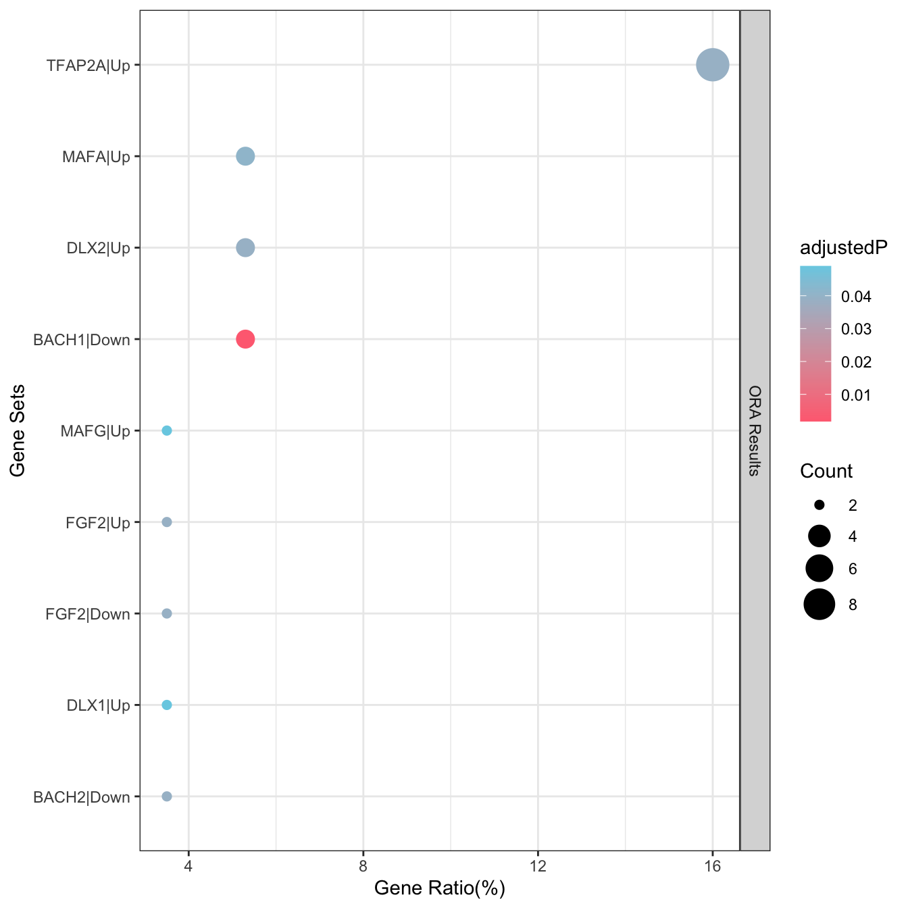

EnrichGT generates insightful results by simply constructing a term frequency matrix of genes enriched in pathways and performing clustering. While the results may not be statistically optimal, they offer significant interpretive insights.
Print ?egt_recluster_analysis for further help. But of note, you can adjust ClusterNum (Cluster the enrichment into N clusters) and nTop (Show how many top items in GT table) for a better result (the default is not all the best for your data).
Form clusterProfiler ?
This can also supports the results from clusterProfiler, so you can use any tool to do this.
Why the re-enrichment is necessary?
Challenges in Biological Gene Enrichment Analysis
Gene enrichment analysis can often be misleading due to the redundancy within gene set databases and the limitations of most enrichment tools. Many tools, by default, only display a few top results and fail to filter out redundancy. This can result in both biological misinterpretation and valuable information being overlooked.
For instance, high expression of certain immune genes can cause many immune-related gene sets to appear overrepresented. However, a closer look often reveals that these gene sets are derived from the same group of genes, which might represent only a small fraction (less than 10%) of the differentially expressed genes (DEGs). What about the other 90%? Do they hold no biological significance?
Current Solutions
clusterProfiler is one of the most powerful tools in R for enrichment analysis. It’s designed with pathway redundancy in mind and includes the clusterProfiler::simplify function to address this issue. This method, based on GOSemSim for GO similarity evaluation, is scientifically robust and highly effective.
However, there are some drawbacks:
GOSemSim is not fast, particularly when dealing with large or complex gene sets.
It doesn’t support databases like KEGG or Reactome.
Using GOSemSim to measure the semantic similarity between pathways is, theoretically, the best way to tackle redundancy. However, in practical cases—especially in experimental bioinformatics validation—researchers are more focused on the genes behind these pathways rather than the pathways themselves.
Alternative Approaches
Although clustering pathways based on gene overlap has received some criticism, it remains a viable approach in many situations. For this reason, I developed BioThemeFinder a few years ago to solve this problem. However, the tool is so awful (I am poor in coding…)
Today, two excellent alternatives exist:
simplifyEnrichment: This package is more scientifically rigorous (based on semantic similarity) and creates beautiful visualizations. It also doesn’t support databases like KEGG or Reactome.
aPEAR: A simpler and faster tool that better aligns with practical needs, making it my preferred choice.
However, both of these tools have a common limitation: their visualizations are optimized for publication purposes rather than for exploratory research. I often find myself exporting CSV files or struggling with RStudio’s preview pane to fully explore enrichment tables. This inspired me to develop a more efficient solution. Also, they are slow.
Goals of This Package
The main purpose of developing this package is to provide a lightweight and practical solution to the problems mentioned above. Specifically, this package aims to:
Cluster enrichment results based on hit genes or core enrichment from GSEA using term frequency analysis (from the output of the powerful clusterProfiler). This provides a clearer view of biological relevance by focusing on the genes that matter most.
You can see the structure of re_enrich object above. The re_enrich object is an S4 EnrichGT_obj object. The first slot is the result table (a data.frame), and the second slot contains gt table.
str(re_enrich,max.level =2)
Formal class 'EnrichGT_obj' [package "EnrichGT"] with 8 slots
..@ enriched_result : tibble [67 × 7] (S3: tbl_df/tbl/data.frame)
..@ gt_object :List of 17
.. ..- attr(*, "class")= chr [1:2] "gt_tbl" "list"
..@ gene_modules :List of 10
..@ pathway_clusters :List of 10
..@ document_term_matrix:Formal class 'dgCMatrix' [package "Matrix"] with 6 slots
..@ clustering_tree :List of 7
.. ..- attr(*, "class")= chr "hclust"
..@ raw_enriched_result :'data.frame': 175 obs. of 7 variables:
..@ fused : logi FALSE
How to get objects inside the S4 object?
You can use @, for example, x <- re_enrich@enriched_result returns a result table and x <- re_enrich@gt_object returns a gt object.
You can simple View(re_enrich@enriched_result) for the first slot.
x <- re_enrich@enriched_result # Get the re-enrichment result tabletable(x$Cluster) # You can see all enriched results splited into 17 clusters
But EnrichGT offers more than data frames. Please see HTML reports (gt table) for further visualization.
Infering TFs or pathway activity and more based on meta-gene modules
Based on re-enriched result, the S4 object return from re-enrichment contains gene_modules slot and pathway_clusters slot. In gene_modules slot you can find a group of meta-genes take part in specific pathway cluster (in pathway_clusters slot).
EnrichGT supports inferring Pathway or Transcript Factors activity from re-enriched meta-gene modules. This is accomplished by two amazing database:
PROGENy is a comprehensive resource containing a curated collection of pathways and their target genes, with weights for each interaction.
CollecTRI is a comprehensive resource containing a curated collection of TFs and their transcriptional targets compiled from 12 different resources. This collection provides an increased coverage of transcription factors and a superior performance in identifying perturbed TFs compared to our previous.
ℹ You can adjust the param of egt_recluster_analysis() for better results. Please refer to the help page.
TF_Act <-egt_infer_act(re_enrich_smaller_clusterNum,DB ="collectri", species ="human")
! If when doing re-enrichment, you select a high number of clusters, that may cause low gene number in each meta-gene module, and then can't be infered sucessfully. So if result is empty, please increase the number of re-clustering when doing it.
✔ success loaded self-contained database
✔ Done ORA in 0.0162250995635986 sec.
✔ Done ORA in 0.0125210285186768 sec.
✔ Done ORA in 0.0138130187988281 sec.
✔ Done ORA in 0.0146079063415527 sec.
✔ Done ORA in 0.0138719081878662 sec.
✔ Done ORA in 0.0138189792633057 sec.
egt_plot_results(TF_Act$Cluster_3)
ℹ Use Default P-adjust cut-off 0.05. You can pass `P.adj=xxx` arugument to filter.
! You are drawing origin results, for better result you can re-cluster it by egt_recluster_analysis()

Wants to interpret the regulator of whole inputted genes?
PROGENy and CollecTRI can be used just like other database in ORA or GSEA enrichment, for example, the database_GO_BP(). See [Progeny Database] and [CollecTRI Database] page for detail.
If when doing re-enrichment with a high number of clusters, that may cause low gene number in each meta-gene module (splitting into too many clusters make gene in each cluster is not enough to enrich), and then can’t be inferred successfully. So if result is empty, please increase the number of re-clustering when doing it.